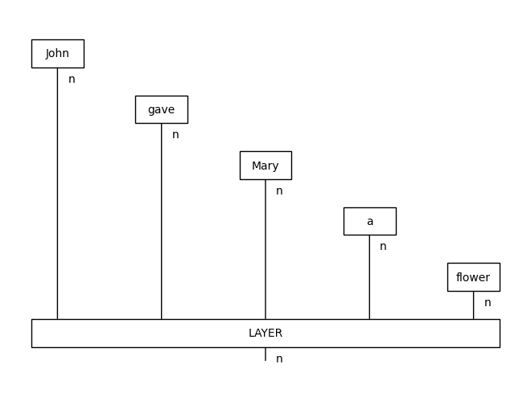
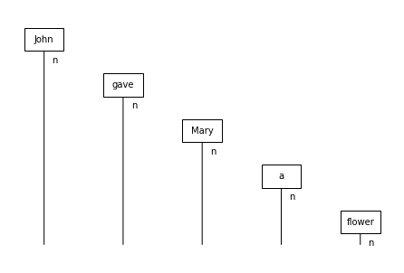
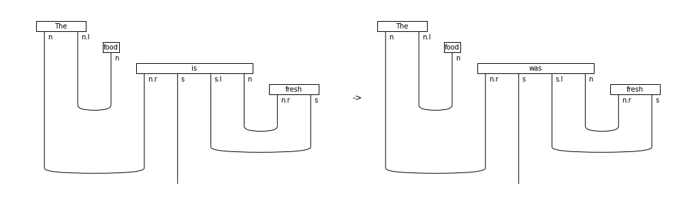
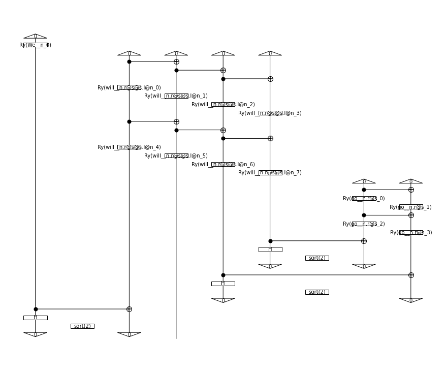
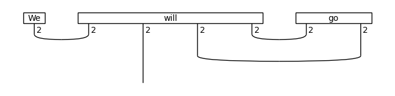

[1]:
from lambeq import AtomicType, Reader
from discopy import Box, Id, Word
N = AtomicType.NOUN
class CombReader(Reader):
def sentence2diagram(self, sentence):
words = Id().tensor(*[Word(w, N) for w in sentence.split()])
layer = Box('LAYER', words.cod, N)
return words >> layer
diagram = CombReader().sentence2diagram('John gave Mary a flower')
diagram.draw()

[2]:
Id().tensor(*[Word(w, N) for w in ['John', 'gave', 'Mary', 'a', 'flower']]).draw()

[3]:
from lambeq import BobcatParser
parser = BobcatParser(verbose='text')
d = parser.sentence2diagram('The food is fresh')
[4]:
from lambeq import AtomicType, SimpleRewriteRule
from discopy.rigid import Box, Id
N = AtomicType.NOUN
S = AtomicType.SENTENCE
adj = N @ N.l
NOT = Box('NOT', S, S)
negation_rewrite = SimpleRewriteRule(
cod=N.r @ S @ S.l @ N,
template=SimpleRewriteRule.placeholder(N.r @ S @ S.l @ N) >> Id(N.r) @ NOT @ Id(S.l @ N),
words=['is', 'was', 'has', 'have'])
[5]:
from lambeq import Rewriter
from discopy import drawing
not_d = Rewriter([negation_rewrite])(d)
drawing.equation(d, not_d, symbol='->', figsize=(14, 4))

[6]:
from lambeq import RewriteRule
class PastRewriteRule(RewriteRule):
mapping = {
'is': 'was',
'are': 'were',
'has': 'had'
}
def matches(self, box):
return box.name in self.mapping
def rewrite(self, box):
new_name = self.mapping[box.name]
return type(box)(name=new_name, dom=box.dom, cod=box.cod)
[7]:
past_d = Rewriter([PastRewriteRule()])(d)
drawing.equation(d, past_d, symbol='->', figsize=(14, 4))

[8]:
d = parser.sentence2diagram('We will go')
[9]:
from discopy.quantum.circuit import Functor, Id
from discopy.quantum.gates import Bra, CX, Ket, Ry
from lambeq import CircuitAnsatz
from lambeq.ansatz import Symbol
class RealAnsatz(CircuitAnsatz):
def __init__(self, ob_map, n_layers):
super().__init__(ob_map=ob_map, n_layers=n_layers)
self.n_layers = n_layers
self.functor = Functor(ob=self.ob_map, ar=self._ar)
def _ar(self, box):
# step 1: obtain label
label = self._summarise_box(box)
# step 2: map domain and codomain
dom, cod = self._ob(box.dom), self._ob(box.cod)
n_qubits = max(dom, cod)
n_layers = self.n_layers
# step 3: construct and return ansatz
if n_qubits == 1:
circuit = Ry(Symbol(f'{label}_0'))
else:
# this also deals with the n_qubits == 0 case correctly
circuit = Id(n_qubits)
for i in range(n_layers):
offset = i * n_qubits
syms = [Symbol(f'{label}_{offset + j}') for j in range(n_qubits)]
# adds a ladder of CNOTs
for j in range(n_qubits - 1):
circuit >>= Id(j) @ CX @ Id(n_qubits - j - 2)
# adds a layer of Y rotations
circuit >>= Id().tensor(*[Ry(sym) for sym in syms])
if cod <= dom:
circuit >>= Id(cod) @ Bra(*[0]*(dom - cod))
else:
circuit <<= Id(dom) @ Ket(*[0]*(cod - dom))
return circuit
[10]:
real_d = RealAnsatz({N: 1, S: 1}, n_layers=2)(d)
real_d.draw(figsize=(12, 10))

[11]:
from lambeq import TensorAnsatz
from discopy import rigid, tensor
from functools import reduce
class PositiveAnsatz(TensorAnsatz):
def _ar(self, box):
# step 1: obtain label
label = self._summarise_box(box)
# step 2: map domain and codomain
dom, cod = self._ob(box.dom), self._ob(box.cod)
# step 3: construct and return ansatz
name = self._summarise_box(box)
n_params = reduce(lambda x, y: x * y, dom @ cod, 1)
syms = Symbol(name, size=n_params)
return tensor.Box(box.name, dom, cod, syms ** 2)
[12]:
from discopy import Dim
ansatz = PositiveAnsatz({N: Dim(2), S: Dim(2)})
positive_d = ansatz(d)
positive_d.draw()

[13]:
import numpy as np
from sympy import default_sort_key
syms = sorted(positive_d.free_symbols, key=default_sort_key)
sym_dict = {k: -np.ones(k.size) for k in syms}
subbed_diagram = positive_d.lambdify(*syms)(*sym_dict.values())
subbed_diagram.eval()
[13]:
Tensor(dom=Dim(1), cod=Dim(2), array=[8., 8.])